Miguitas, con identidad propia.
Qué cambiar en el perfil, cómo se ve la marca y las primeras piezas ya listas para subir.
Así quedaría el perfil
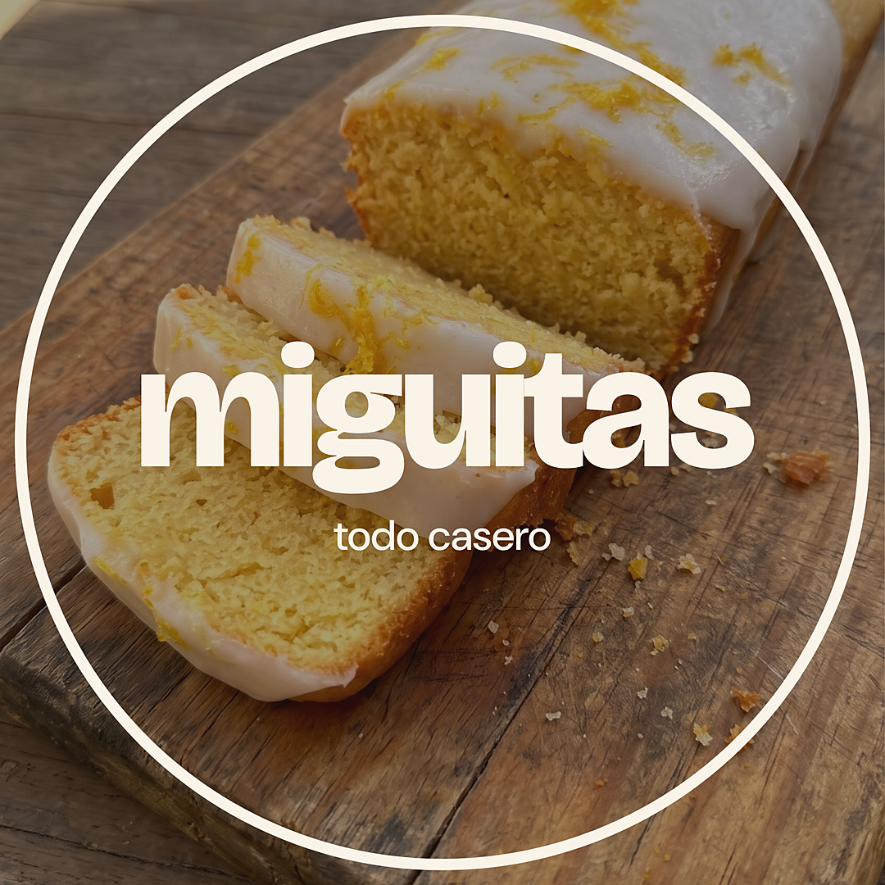
Budines caseros recién horneados 🍋🍊🍫
Limón · Naranja · Chocolate · Chips
📍 San Martín, Mendoza
👇 Encargá por WhatsApp
wa.me/549…
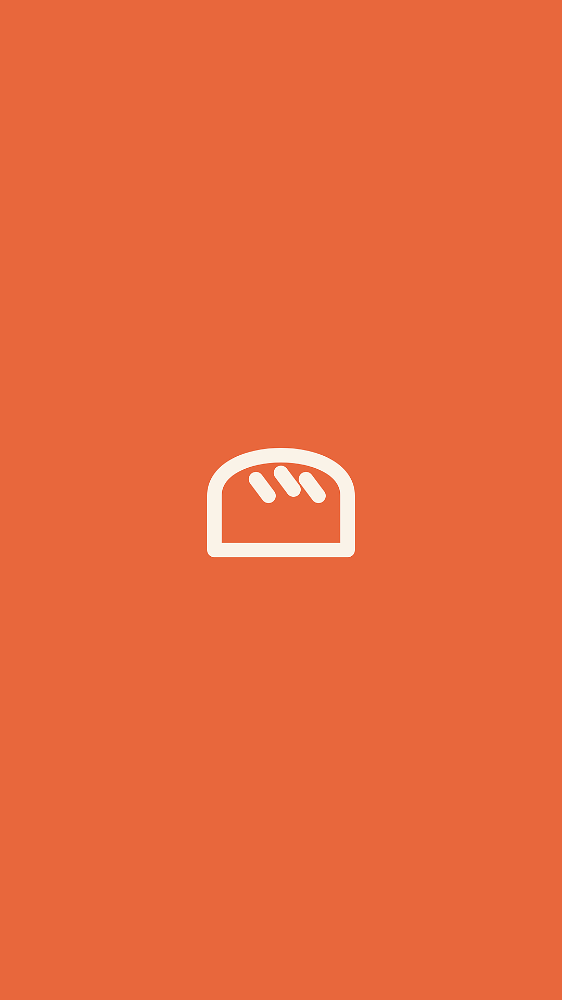
Sabores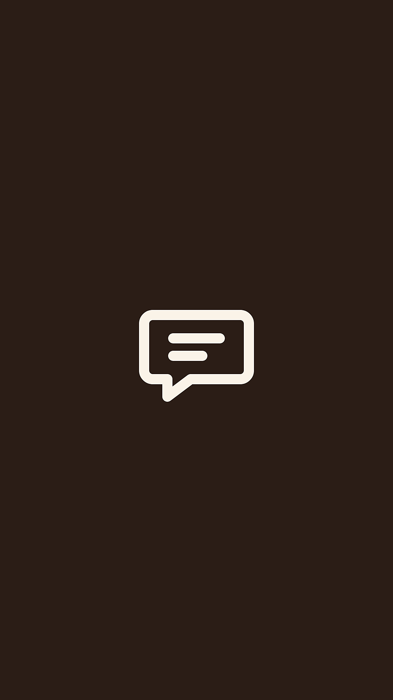
Encargos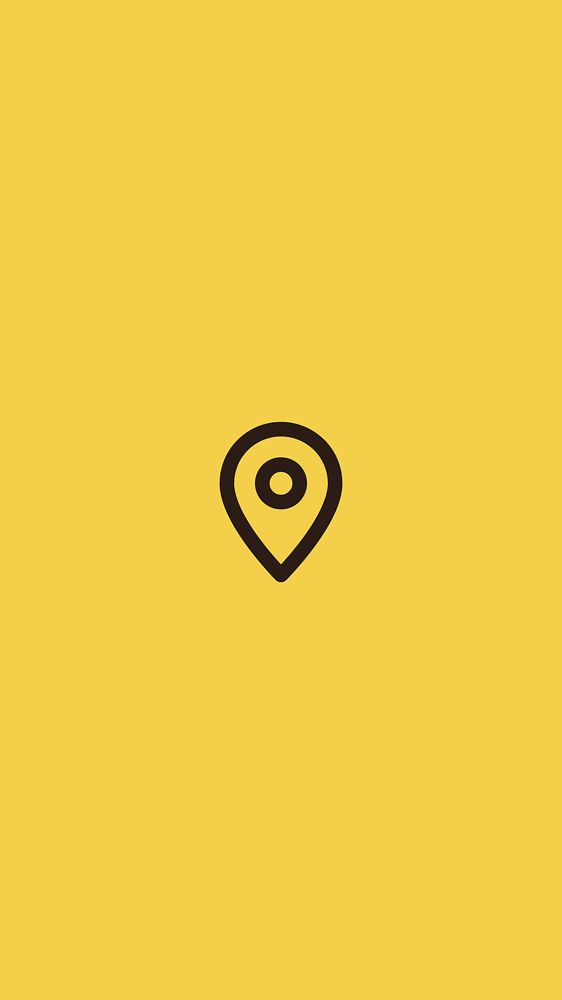
Envíos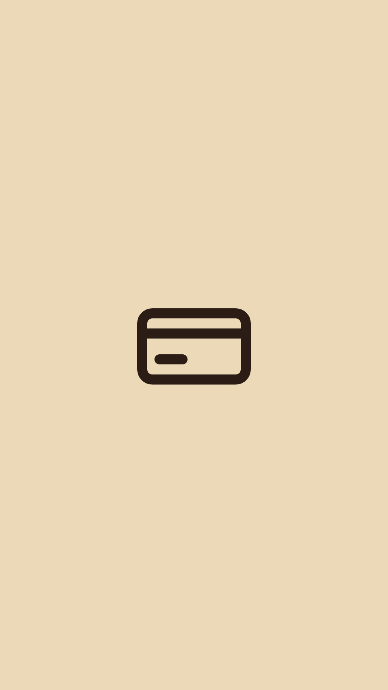
Pagos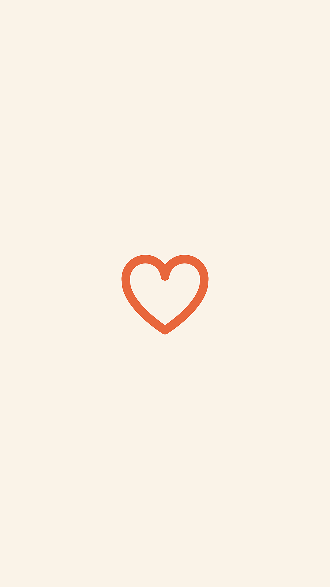
ClientesSeis cambios, en este orden
Foto de perfil
Hoy: una foto con el texto encima, que en el círculo chico no se llega a leer. Usá el logo nuevo: una sola palabra, fondo liso. Se reconoce incluso en el tamaño de las historias.Nombre
Hoy: “Miguitas”. Poné “Miguitas | Budines caseros”. Ese campo es el que usa el buscador de Instagram, así aparecés cuando alguien busca “budines”.Biografía
Hoy: dice qué vendés y dónde, pero no qué sabores ni cómo pedir. La de abajo suma sabores y una acción clara. Entra en el límite de 150 caracteres.Link de WhatsApp
Hoy: api.whatsapp.com/send?phone=… queda largo y cortado. Cambialo por el formato corto wa.me/549 + tu número, con el mensaje ya escrito. Mejor todavía: pasá la cuenta a profesional (categoría Panadería) y activá el botón “WhatsApp” del perfil.Destacadas
Hoy: las cuatro tienen la misma foto de portada. Una portada distinta por tema, con ícono y color. Orden: Sabores, Encargos, Envíos, Pagos y, cuando tengas las primeras, Clientes.Publicaciones
Hoy: 0. Un perfil vacío no genera confianza para encargar. Subí las primeras 9 antes de salir a buscar seguidores. El plan está más abajo.
Textos para copiar
Nombre
Miguitas | Budines caseros
Biografía
Budines caseros recién horneados 🍋🍊🍫 Limón · Naranja · Chocolate · Chips 📍 San Martín, Mendoza 👇 Encargá por WhatsApp
Link
https://wa.me/549XXXXXXXXXX?text=Hola%20Miguitas!%20Quiero%20encargar%20budinesReemplazá las X por tu número, sin el 0 ni el 15.
La identidad
Miguitas son las migas que quedan cuando el budín estuvo rico. Ese es el recurso de la marca: el nombre en minúscula, redondeado, con unas migas sueltas alrededor. Y cada sabor tiene su color, así una persona reconoce el de limón antes de leer.
Mandarina es el color de la marca y del sabor naranja. Son los mismos colores y letras que ya usa tu app de pedidos, así todo se ve de la misma casa.
Bricolage Grotesque
Títulos y logo. Gratis en Canva y Google Fonts.DM Sans
Textos chicos y precios.Cómo habla la marca
De vos, cercana y corta, como le escribirías a una vecina. Una idea por publicación. Un emoji o dos, no una fila. Siempre cerrá con cómo pedir.
Qué tomar de las referencias
Las tres cuentas que elegiste tienen algo en común: la grilla es casi toda foto y video del producto. Las placas con texto son la excepción.
alba.crumble: la más prolija
Todas las fotos con la misma luz dorada de la tarde, los mismos moldes de papel marrón y tomas de arriba con los budines en fila. El logo y las destacadas ilustradas son del mismo estilo. Dónde le ganás: su bio no dice nada concreto (“Hechos con amor”), solo toma pedidos por mensaje y no tiene videos._budine: la que más llega
Casi todo son reels cortos del producto con una frase encima en primera persona (“mi lenguaje del amor”). Tiene fijada arriba una foto de abundancia con todos los sabores juntos. Dónde le ganás: sus destacadas mezclan portadas distintas y la bio no dice qué vende.maby.cake: la abundancia
Bandejas llenas y primeros planos que dan hambre. Dónde le ganás: logo que no se lee, sin destacadas y stickers distintos en cada foto.
La fórmula para Miguitas
- Foto y video primero. Cuatro de cada cinco publicaciones son el budín. Las placas de color quedan para sabores, cómo encargar y avisos.
- Una sola luz y un solo fondo, como alba.crumble. Elegí un horario y una superficie y no los cambies.
- Un reel por semana con frase encima, como _budine, escrita con la letra de la marca.
- Una foto de abundancia fijada arriba: los cuatro sabores juntos, de arriba.
- Pedir es un toque: WhatsApp directo desde el perfil. Ninguna de las tres lo tiene tan claro.
El primer post
Un carrusel de 5 placas que presenta la marca de punta a punta: quiénes son, qué hacen, los sabores, cómo encargar y el cierre. Las dos primeras placas son fotos tuyas con el título encima.
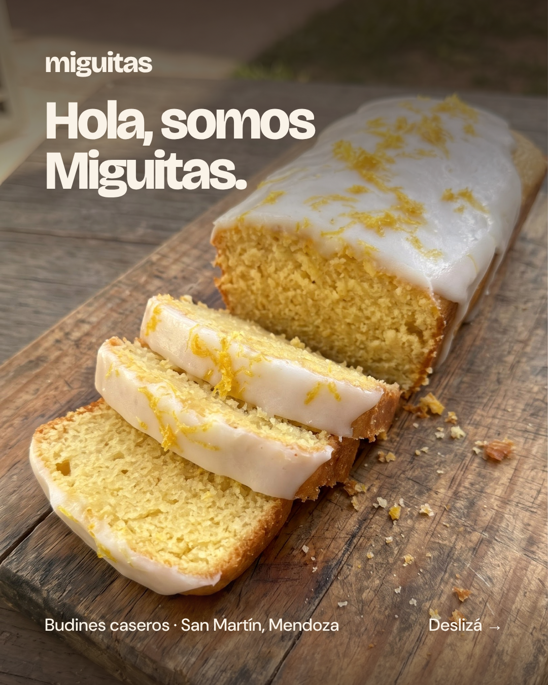
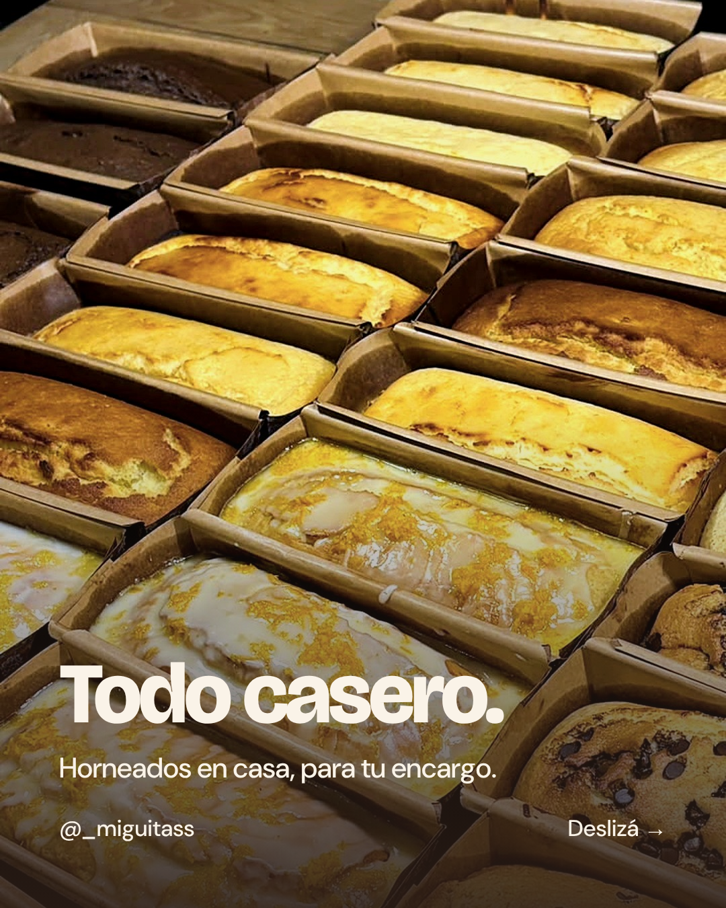

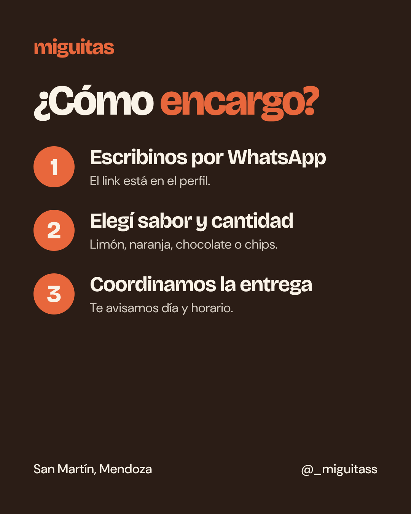
Texto del primer post
Somos Miguitas 👋 Hacemos budines caseros en San Martín, Mendoza, y los horneamos por encargo para que te lleguen frescos. Vienen de 500 g, en limón, naranja, chocolate y chips. Deslizá para conocer los sabores y ver cómo pedir el tuyo 👉 ¿Cuál probarías primero? Contanos en los comentarios. Encargos por WhatsApp, link en el perfil. #budinescaseros #sanmartinmendoza #mendoza #budines #meriendas
Para subirlo: tocá +, elegí Publicación, activá la selección múltiple y marcá las 5 placas en orden. Dejá el recorte en 4:5 (el ícono de las dos flechas abajo a la izquierda).
Piezas listas
Están en tamaño real en la carpeta instagram/export del repositorio, y te las mandé como archivos en el chat para guardarlas en el celular.
Portadas de destacadas
Publicaciones
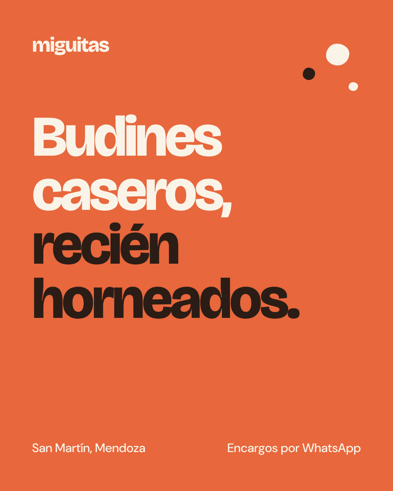
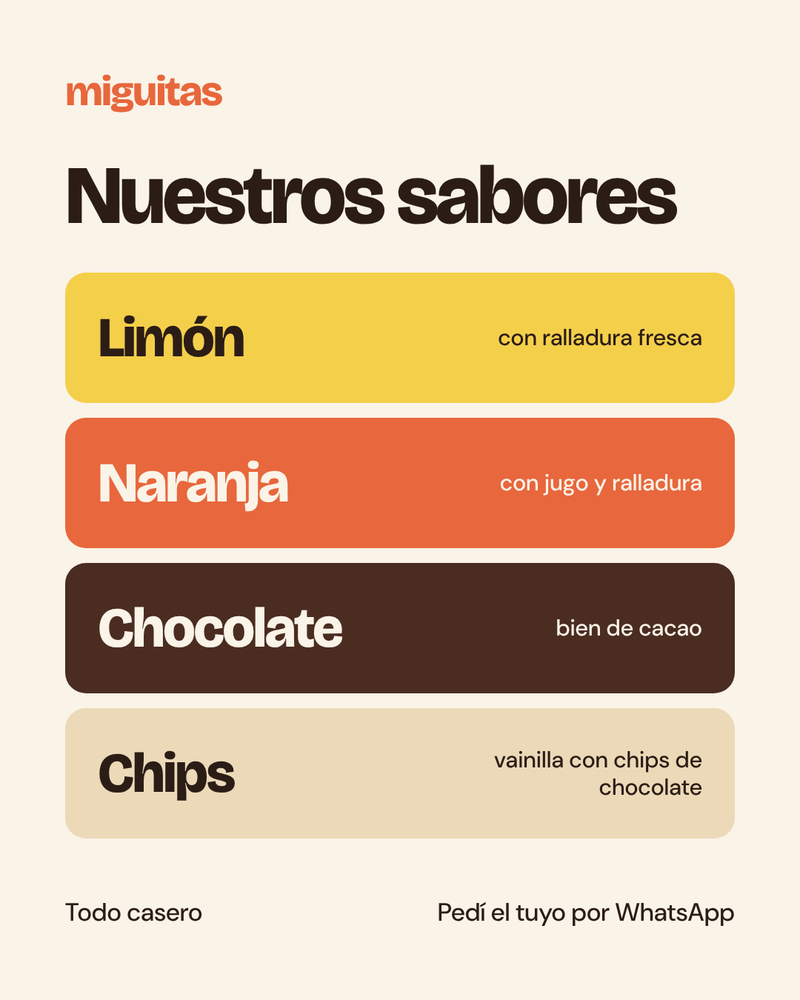

Revisá que las descripciones de cada sabor coincidan con tu receta antes de subir la de sabores.
Las primeras 9
Así se vería la grilla. El carrusel de presentación abre la cuenta, y después las piezas de color van en la columna del medio con fotos a los costados. Si seguís con una pieza cada tres publicaciones, quedan siempre alineadas en una misma columna.
El número es el orden en que se suben: el carrusel va primero y, con las 9 subidas, queda abajo a la derecha.
Texto · Presentación
Hola, somos Miguitas 👋 Hacemos budines caseros en San Martín, Mendoza. Los horneamos por encargo, así te llegan frescos. Limón, naranja, chocolate y chips. Escribinos por WhatsApp desde el link del perfil y encargá el tuyo. #budinescaseros #sanmartinmendoza #mendoza #budines #meriendas
Texto · Sabores
¿Cuál es el tuyo? 🍋🍊🍫 Limón, naranja, chocolate o chips. Los cuatro salen del mismo horno y con la misma receta de casa. Contanos en los comentarios cuál probarías primero. Encargos por WhatsApp, link en el perfil. #budinescaseros #budindelimon #budindenaranja #sanmartinmendoza
Texto · Cómo encargar
Encargar es fácil: 1. Escribinos por WhatsApp (link en el perfil). 2. Elegí sabor y cantidad. 3. Coordinamos día y horario de entrega. Guardá esta publicación para tenerla a mano 📌 #budinescaseros #sanmartinmendoza #encargos
Fotos que se vean de la misma marca
- Luz de ventana, de día. Sin flash y sin la luz amarilla de la cocina.
- Siempre el mismo fondo. Una tabla de madera o un mantel liso color crema. Es lo que más unifica la grilla.
- Dos ángulos y nada más. De arriba para el budín entero, de costado para la rodaja.
- Un detalle del sabor. Medio limón, una naranja, unos chips sueltos. Y unas migas en la tabla, que son tu firma.
- Formato vertical 4:5. Es el que más lugar ocupa en pantalla.
Una semana tipo
| Lunes | Historia: “Esta semana horneamos…” con los sabores y hasta cuándo se toman encargos. |
|---|---|
| Miércoles | Publicación: foto de un sabor. |
| Viernes | Reel corto: el corte de una rodaja o el budín saliendo del horno. Es lo que más llega a gente nueva. |
| Cada entrega | Historia con la foto del pedido. Si la persona te etiqueta, compartila y guardala en Clientes. |